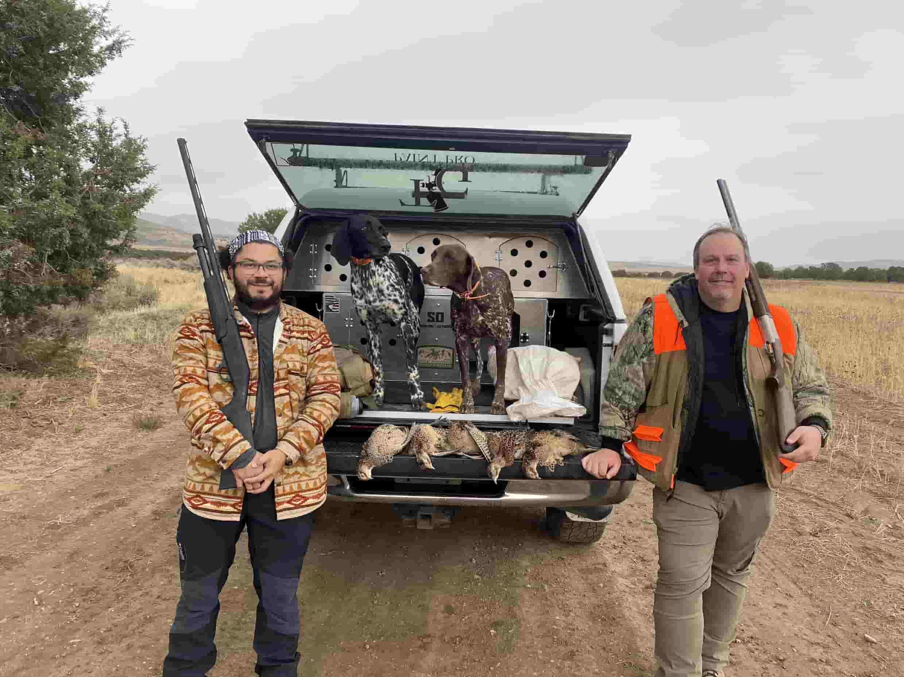
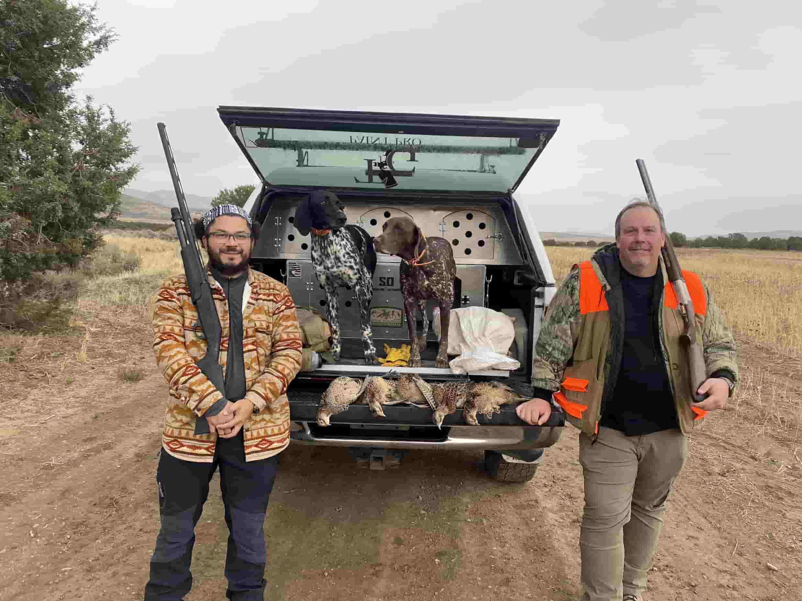

Meet Joey Furtado!
A native of Brazil, Joey moved to the United States 25 years ago to make a better life for himself and his family, where he ended up staying in the Salt Lake Valley. After many years of learning and growth, he entered the real estate market working with several partners and companies such as the Select Realty Group and most recently Conrad Cruz.
Joey's determined to find exactly what you are looking for and can offer guidance and support for every step of the process. Clients are constantly reminded that they can trust him to work steadfastly to completed the task at hand correctly and efficiently. You need an agent with this caliber of talent and track record of success on your side to ensure a smooth and positive experience in your next real estate transaction.
Joey is an avid mountain biker, fisherman, hunter, and musician. He spends his off time with his family and taking them on adventures and teaching them about the life lessons he's learned.
 
